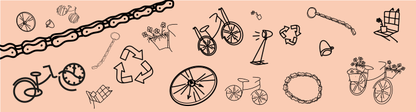

Decoratie met een verhaal
Oude fietsen een nieuw leven geven. Een oude fiets die niet meer te gebruiken is, een fiets die helemaal uit elkaar is gevallen of een fiets die je niet meer gebruikt. Je zou hem misschien snel naar de stort brengen of er nooit meer naar omkijken. Maar je kan ook een nieuw leven geven aan de fiets(onderdelen) door te recyclen.  Op deze website vind je verschillende manieren om je oude fiets(onderdelen) om te toveren naar nieuwe decoratie voor in je huis of je kamer. ben je al nieuwgierig om zelf aan de slag te gaan? Laat je inspireren.